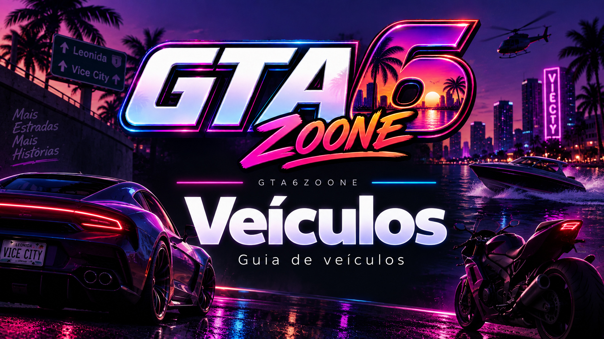

Veículos de GTA VI
Guias para encontrar, conseguir e entender os veículos disponíveis em GTA VI.
Conforme pudermos testar o jogo, cada veículo relevante poderá ter guias específicos com localização, formas de obtenção, requisitos, características práticas, screenshots e gameplay próprio.
← Voltar para todos os GuiasGUIA E WIKI SÃO DIFERENTES: as páginas da Wiki catalogam e apresentam cada veículo. Aqui ficarão os tutoriais práticos: onde encontrar, como conseguir, como desbloquear e como utilizar, quando essas informações puderem ser confirmadas.

Guias individuais de veículos
Os primeiros tutoriais aparecerão aqui quando pudermos confirmar como os veículos são encontrados e obtidos dentro do jogo.
Já temos veículos catalogados na Wiki, mas não vamos transformar isso em um falso “como conseguir” antes de sabermos como a obtenção realmente funciona. Quando essas informações estiverem disponíveis, cada dúvida importante poderá receber sua própria página.
O que vamos explicar
A categoria poderá reunir diferentes tipos de guias conforme conhecermos os sistemas de veículos de GTA VI.
Onde encontrar
Localizações confirmadas de veículos.
Como conseguir
Métodos reais de obtenção quando conhecidos.
Como desbloquear
Requisitos de desbloqueio quando existirem.
Comparações
Comparativos baseados em testes reais.
Carros
Guias específicos para automóveis catalogados.
Motos
Obtenção e utilização de motocicletas.
Embarcações
Guias relacionados aos veículos aquáticos.
Outros veículos
Categorias adicionais conforme forem confirmadas.
Veículos já catalogados
Enquanto os tutoriais ainda não estão disponíveis, você pode consultar as fichas dos veículos que já possuem página no GTA6Zoone.
’95 Grotti Cheetah
Consulte a ficha e as imagens do veículo.
Abrir na Wiki → VEÍCULODinka Enduro
Consulte a página dedicada à motocicleta.
Abrir na Wiki → VEÍCULOGanado Retro
Veja as informações atualmente catalogadas.
Abrir na Wiki → EMBARCAÇÃOShitzu Squalo
Consulte a ficha da embarcação.
Abrir na Wiki → VEÍCULOVapid Dominator Buggy
Veja a página dedicada ao veículo.
Abrir na Wiki → VEÍCULOVapid Stanier
Consulte informações e imagens atualmente disponíveis.
Abrir na Wiki → VEÍCULOCrest Kayak
Veja a ficha dedicada no catálogo de veículos.
Abrir na Wiki → CATÁLOGOTodos os veículos
Abra o índice completo da Wiki de veículos.
Ver catálogo →Guia ou ficha de veículo?
Se você quer saber o que é determinado veículo, ver imagens ou consultar as informações disponíveis, use a Wiki. Se a dúvida for como encontrar, conseguir ou utilizar aquele veículo, esta Central de Guias será o lugar certo.
Continue na Central de Guias
Todas as categorias permanecem interligadas.
Iniciantes
Primeiros passos e sistemas básicos.
Abrir categoria → GUIASDinheiro
Economia, ganhos e gastos.
Abrir categoria → GUIASMissões
Passo a passo da campanha.
Abrir categoria → GUIASArmas
Obtenção e funcionamento.
Abrir categoria → GUIASPropriedades
Casas, garagens e estabelecimentos.
Abrir categoria → GUIASAtividades
Conteúdos opcionais.
Abrir categoria → GUIASColecionáveis
Localizações e rotas.
Abrir categoria → GUIASMapa
Guias de localização.
Abrir categoria → GUIASGuia 100%
Complete tudo em GTA VI.
Abrir categoria → CENTRALTodos os Guias
Voltar ao índice principal.
Abrir Central →Procurando um veículo?
Pesquise pelo nome do veículo ou por qualquer outro conteúdo já catalogado no GTA6Zoone.